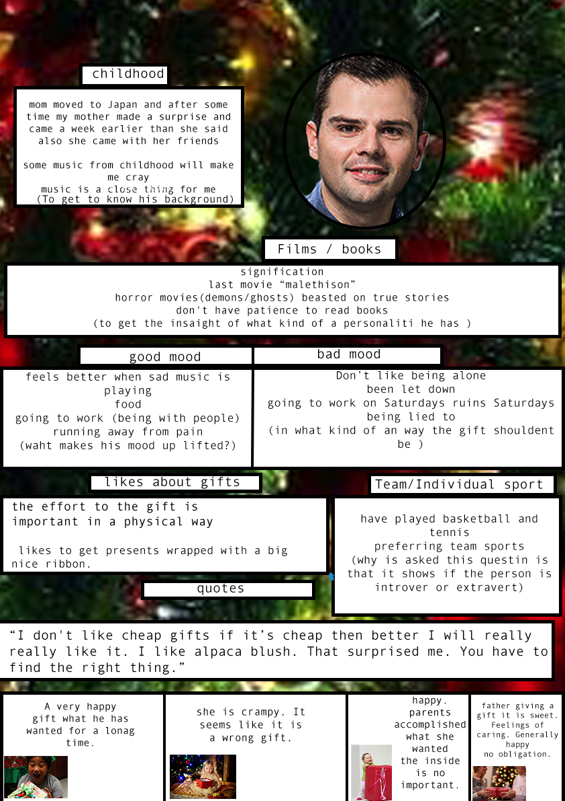
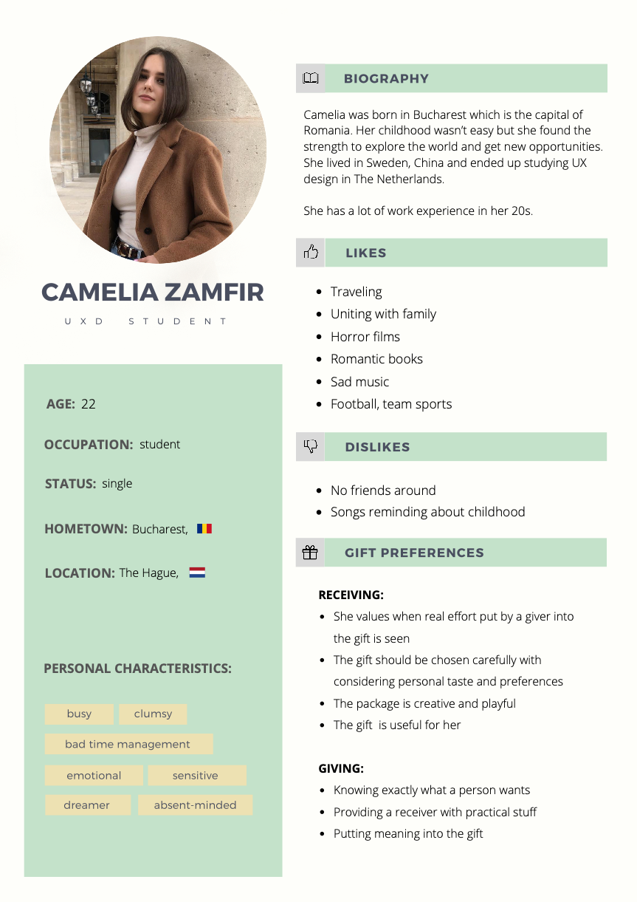

What is the Bespoke Design?
It is anything that is specifically designed for a person or a certain group or a company.
Set-up?
The setup started in a way that everyone from our course had to pair up to start with the bespoke project. Then we got our users who were selected by the lecturers. So, when we got to know who our users are then we could start planning and arranging the appointments for an interview to get to know our users. We had to have the same topics that we are going to talk about with our users. When I and my design partner had agreed on the topics that we are going to talk during the interview then we had to arrange the interview separately. Based on the interviews we did our user portraits. The portrait reflected of the most important and helpful insights from the interview about the user. Also, I made an individual design vision to process the important information form the interview and also from the desk research. After me and my design partner had done the individual part then both of us made a fictional persona combined from the two different user portraits. The fictional persona helped us to get to know what are the similarities between our two-user’s personal characteristic. The same thing with the design vision.


Study (the project) goal?
According to the project scheme we did it in pairs. Every pair get two persons as users who were selected by the lecturers. Our first task was to get to know our users by interviewing them. In the forehand, we had to agree on topics to be covered in the interviews, as I interviewed one of the users and my partner the other. Based on the interviews we created our user portraits separately. The portrait reflected the most important and helpful insights from the interview. Besides the portrait, both of us made an individual design vision, for processing the important information from the interview and also from the desk research. After me and my design partner had done the individual part, we made a fictional persona combined from the two different user portraits. The fictional persona had personal characteristics from both users. We picked three most important aspects from the fictional persona, which was now the user for us and concentrated on these, while we were also built up the team design vision. The vision included a tool created by me for creating the package of an unwrapping experience.
From the fictional persona, we picked three most important aspects of our fictional persona which was for us the user. And those three aspects we mostly user them trough out our design vision. So, the goal was to understand the user's needs and what the uses likes and dislikes. To start making the tool and the unwrapping experience based on the persona which was made from our two real users. From that one, I concentrated on making a tool where a user can make the gift package where you can start unwrapping the gift.
Here are the screen shots of the prototype that I made.